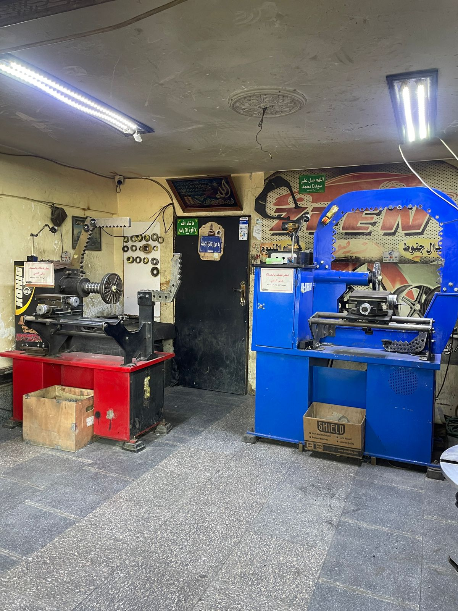
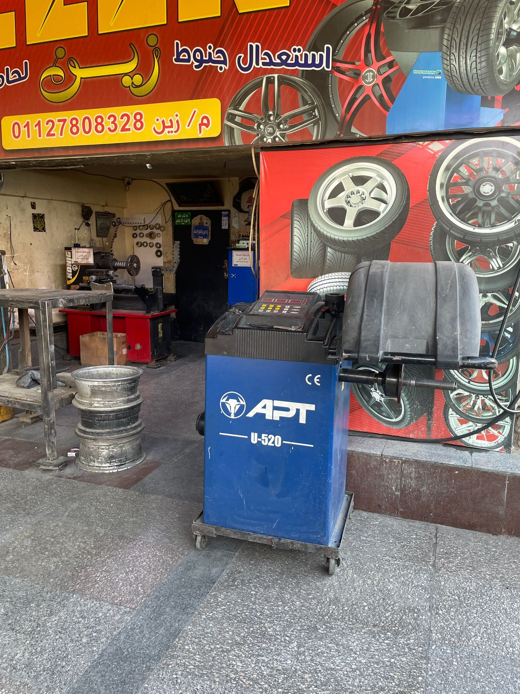
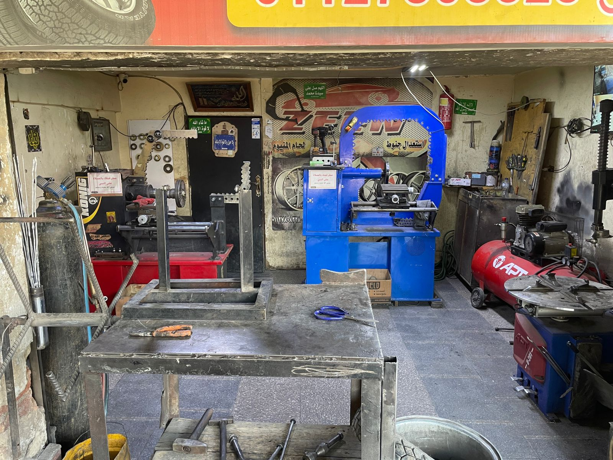

دقة احترافية وأعلى معايير الأمان لإعادة جنوط سيارتك لحالتها الأصلية بأحدث المعدات الألمانية والليزري.
م/ زين: 01127808328

مكبس استعدال جنوط مخصص للتعامل مع الشطرة ومعالجة الانحناءات الهيكلية الشديدة في جنوط الألمنيوم.

جهاز ترصيص ليزري ديناميكي متطور لضبط الاتزان بالمليجرام لضمان قيادة ناعمة تماماً وآمنة على السرعات.

ماكينة مخصصة لتغيير الإطارات (سبور - حديد) بأمان تام ودون خدش الجنط أو الإطار.